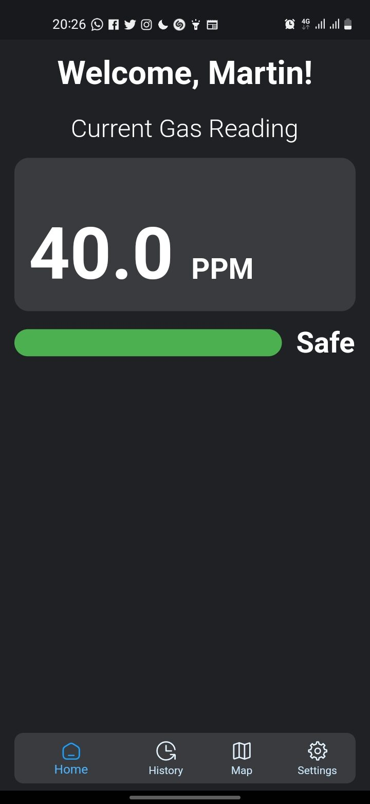
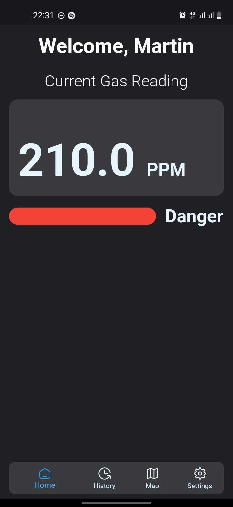
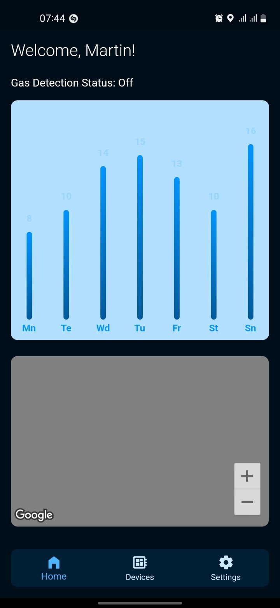
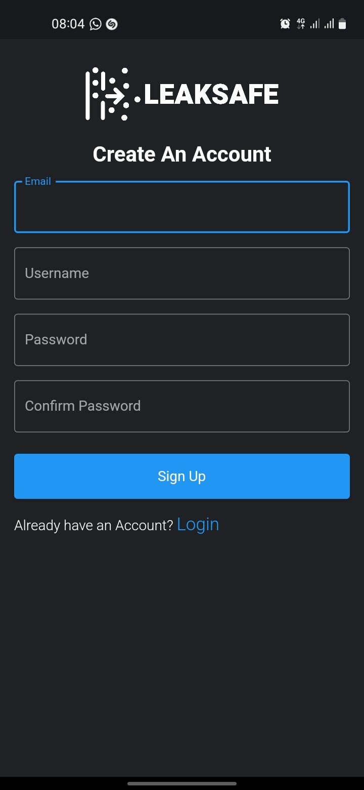

LeakSAFE – Smart Gas Leakage Detection System
A cross-platform mobile application integrated with ESP32 hardware sensors to deliver real-time atmospheric gas tracking, dynamic threat analysis, and automated hazardous alerts.
At A Glance
System Data Flow
ESP32 + MQ Sensors
Calibrated gas sensor modules continuously sample atmospheric PPM concentrations.
Firebase Realtime DB
Telemetry streams to Firebase for live synchronization and historical persistence.
Flutter Application
Cross-platform app renders real-time PPM readings with dynamic threshold UI states.
Alert & Notification
Local push notifications trigger instantly upon detecting elevated PPM thresholds.
Key Features
Real-Time Monitoring
Continuously tracks atmospheric gas concentrations with visual Safe/Moderate/Danger UI color state transitions.
Live Sensor Mapping
Google Maps integration pinpoints sensor locations geographically for precise leak origin identification.
Historical Analytics
Bar and line charts visualize historical PPM readings to identify frequency patterns and temporal safety trends.
Instant Alerts
Local push notifications and dynamic threshold triggers notify users immediately when gas levels become hazardous.
User Authentication
Firebase Auth secures user accounts, ensuring only authorized individuals access telemetry data and settings.
Customizable Thresholds
Users can configure alert thresholds in settings, tailoring safety responses to their specific environment requirements.
System Mechanics
- Continuous atmospheric monitoring via calibrated MQ gas sensor modules connected to an ESP32 microcontroller node.
- Live telemetry data streaming directly to the Flutter application interface for real-time parts-per-million (PPM) concentration display.
- Dynamic threshold triggers that transform application UI color states from Safe (Green) to Danger (Red) upon detecting elevated PPM levels.
- Geographic sensor mapping and historical frequency charts to track leak origin points and temporal safety patterns.
Tools & Technologies
Frontend
Backend & Data
Hardware
Tooling
Challenges & Solutions
Real-Time Telemetry Pipeline
Challenge: Ensuring low-latency data delivery from physical ESP32 sensor nodes to the mobile application without data loss or visual lag.
Solution: Implemented Firebase Realtime Database as the synchronization layer, enabling instantaneous streamed updates from hardware to app while maintaining historical persistence for analytics.
Threshold Calibration Accuracy
Challenge: Distinguishing normal atmospheric variations from dangerous PPM levels while avoiding false alarms that undermine user trust.
Solution: Designed dynamic threshold triggers with configurable user settings, combined with visual UI state transitions from Safe (green) to Danger (red) for rapid, intuitive threat assessment.
Unified Mobile Experience
Challenge: Delivering a consistent, feature-rich experience across both iOS and Android with native-level performance from a single codebase.
Solution: Leveraged Flutter's cross-platform framework with platform-adaptive plugins for geolocation, maps, and local notifications to ensure seamless parity across devices.
Application Screenshots

Safe PPM Monitoring
Normal atmospheric concentrations (40.0 PPM) visualized with clear green indicators.

Hazardous Threshold Alert
High PPM levels (210.0 PPM) trigger emergency red visual states and push notifications.

Telemetry & Mapping
Sensor location pinpointing alongside historical PPM reading frequency graphs.

User Registration
Secure account creation flow with Firebase Auth, enabling personalized access to telemetry data and settings.
Interested in the full implementation?
Explore the complete source code on GitHub — including the Flutter mobile application and the ESP32 Arduino hardware firmware.